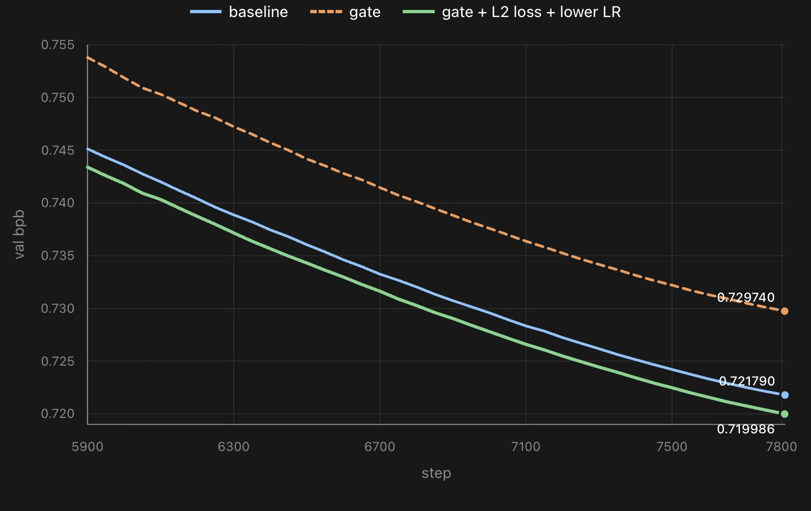
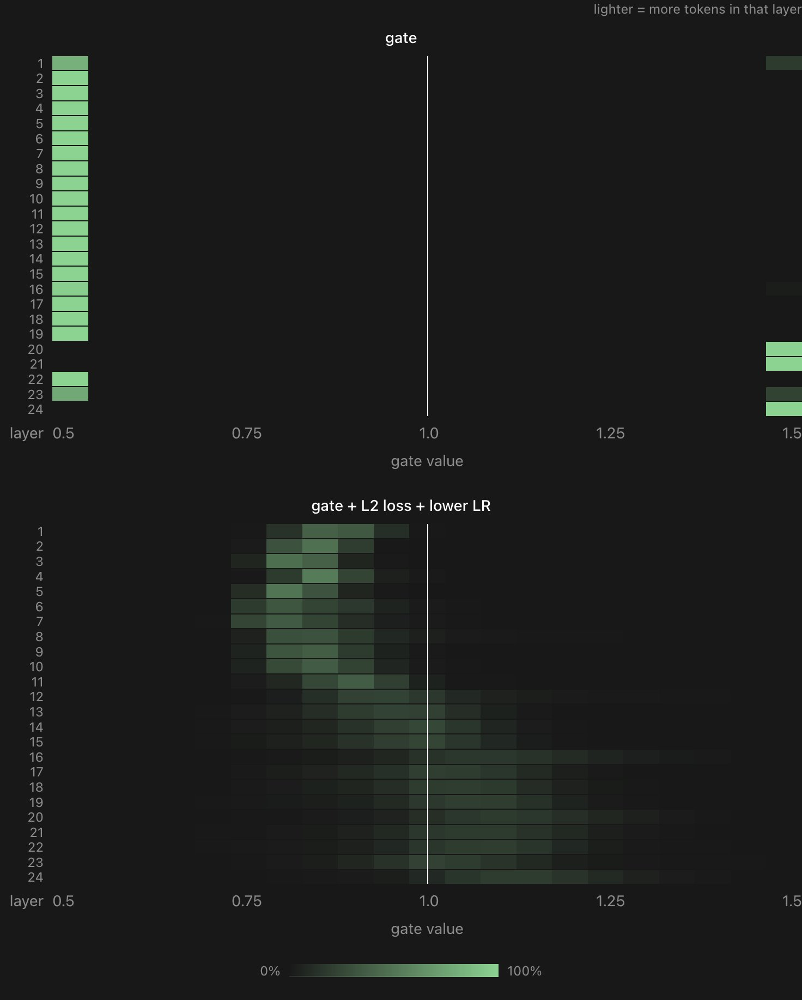
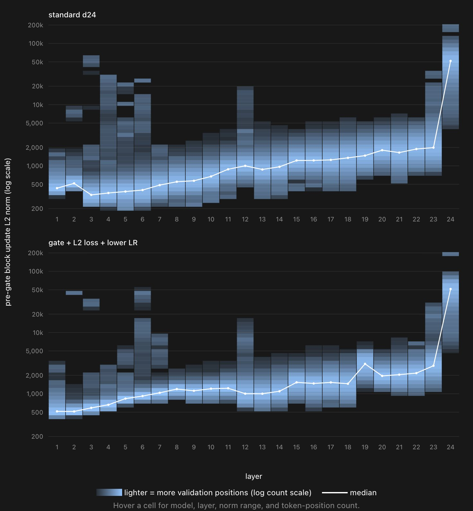
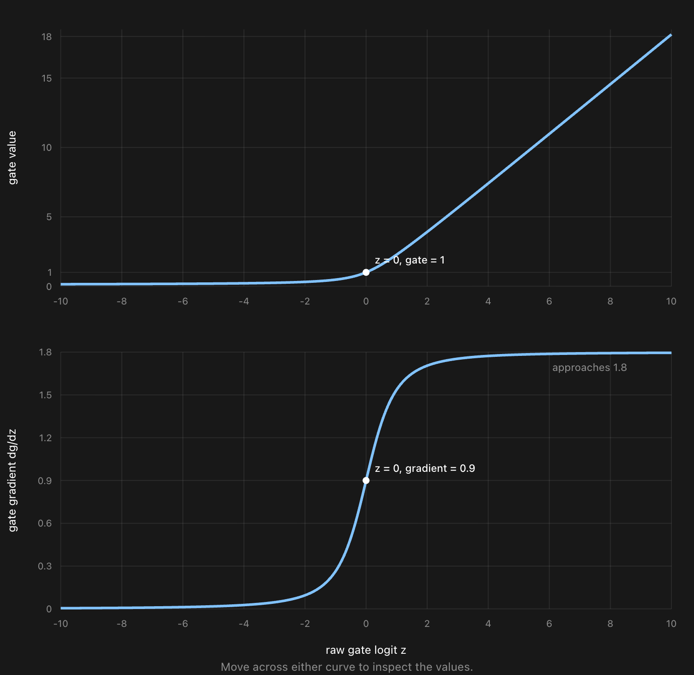
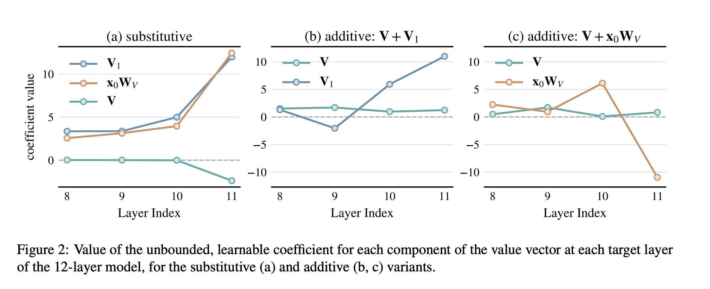
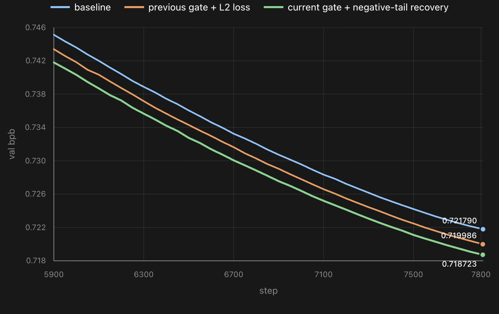
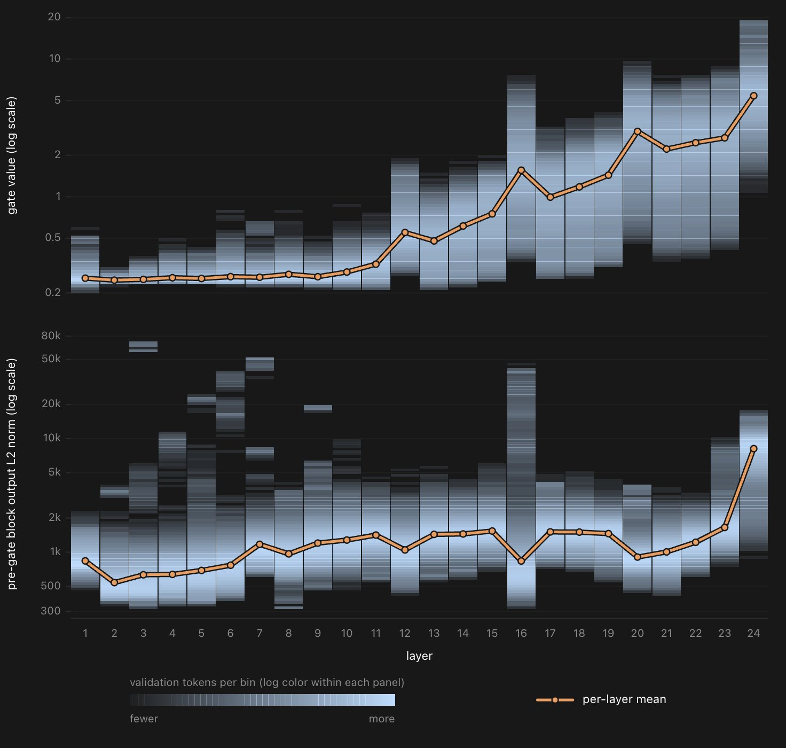
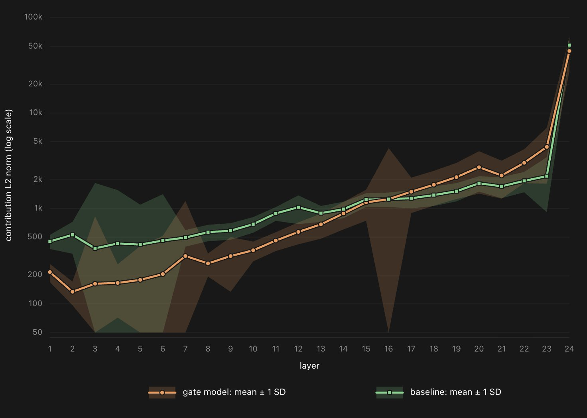

Gated Transformer
This is an ongoing chronicle of the motivation, experiments, and finding of a transformer model that is able to scale each block output by a gate value, documenting how the research has evolved (and is evolving).
August 3, 2026
Continuing to train this model which scales each block output with a token-dependent gate. Previously the val loss was high and gate values were concentrated on two extremes. Now I've identified them as not design but training issues. Solving them beats the baseline by a bit, pointing to some valuable followups.
Previous issues. The gate design is \(1 + 0.5 \tanh(wx)\) with gate vector \(w\) and input \(x\), so value range is \([0.5, 1.5]\), and in bf16 the gradient for \(w\) goes to exact 0 if \(\lvert wx \rvert = 3.5\). I tried to address this by changing the gate, but it did not work. Sigmoid / Tanh / ReLU / SiLU all have a component in the gradient that can zero out the whole gradient. Also \(x\) is already RMS-normed and not a factor.
Training solution. My solution is not super principled because i changed several things at once, but the idea is that each makes sense: (1) I added a L2 norm on \(wx\) directly so that it stays within range; (2) I massively lowered the LR from 0.35 (nanochat default, VERY high for a vector) to 0.001.
The result. We see that the validation bpb on the 780M model trained on 8B tokens beat the standard baseline, and then gate values evaluated on 262k tokens show no extreme values. This is a good indicator of model health, and therefore gives me a good model to do some mech interp on.


Followups. Already we can see that the average gate values for each layer is interesting. Early layers are slightly suppressed and late layers are slightly enhanced, but there might also be position and token identity based differences. Slightly hyped to work on this fun model in the coming days.
Code is available at github.com/RiddleHe/nanochat. Shout out to Sol for this Slytherin-coded new aesthetic. Keep it up.
August 4, 2026
I trained this gate model that outputs a scalar gate for each layer output in range \([0.5, 1.5]\). But i plotted the L2 norm of each layer output of this model vs baseline on 272K tokens, and it is evident that scaling by 0.5~1.5 won't do much.
I am now experimenting a new gate \(w\) that has unbounded positive value: \(0.1 + 0.9(z + \sqrt{1 + z^2})\) for \(z = w \cdot x\). The nice property is that while \(z\) can take on any value, the final output is strictly \([0.1, \infty)\). And the gradient of \(z\) also converges nicely on the positive side to a decent value.
The only problem with this is that on the negative side the gradient of \(z\) approaches 0 and for bf16 this means it IS 0 if \(\lvert z \rvert\) approaches 3. And the solution is to define a second loss \(= \max(0, -z - 3)\), to nudge \(z\) away from large negatives if it can.


I hope this model can have interesting properties such as insane but sensical positive gate values for some token / prefix. In my prev paper we see that models love to scale up certain peculiar computational path (deep attention layers with token embed as input). Will love to see something similar here.

August 14, 2026
I have taken a liking to this gated transformer model I am training and found several interesting mech interp results.
The setup. I learned a scalar gate to scale each block output, which is controlled by the dot product between the input and a learned gate vector. After several iterations, the gate is positively unbounded and nicely penalizes going near 0 so that it always has a decent gradient.
The result. The val bpb on 8B token - 780M params beats the baseline and a more bounded model of 0.5~1.5 gate values.

The interesting part is how the token-dependent gate values change the L2 norm of each block output. I observe that standard transformer's block output norm follows a roughly exponential trend so later layers blow up in norm. The gate model however outputs from each block hidden states with roughly the same norm, while the gate value follows an exponential trend. Together the gate * output norm recovers the baseline's exponential trend, with a different slope under log scale.

This result is interesting because it seems to show that gains in val bpb, which seems to be statistically sound, come from a more flexible way to scale the outputs. The two models are equally expressive, as the baseline can also change the norm of each block output depending on the input token. However, the baseline does this using the matrices' weights in a block, while a gate model only needs to use a vector per block. My understanding is that this can simplify the scaling and "offload" the weight matrices to do something else.

A lot of other intrigues in the L2 norm: we see that in the gate model, L16 is extremely high variance. This seems to be a learned property, and is very different from the low variance of other adjacent layers. Wanna take a good look at what's going on.
Citation
@misc{he2026gatedtransformer,
author = {He, Muyu},
title = {Gated Transformer},
year = {2026},
url = {https://riddlehe.github.io/blog/gated-transformer.html}
}